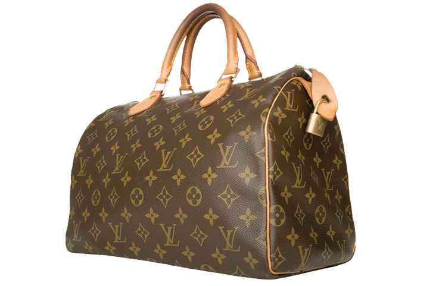
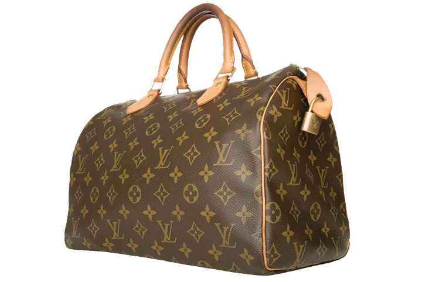
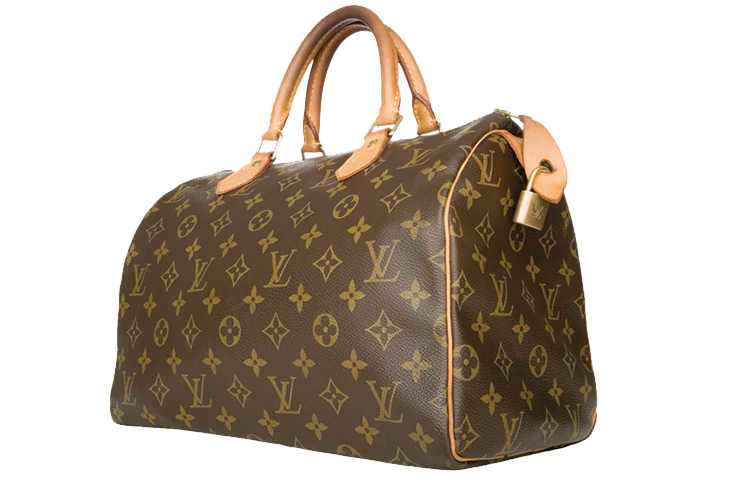

LOGOS
&
VALUE
What is the purpose of a logo in fashion? Does it signify a brand’s integrity? Does the presence of a logo give value to clothing? Do logos turn buyers into walking advertisements?
Explore the collection of 7 case studies.



 
